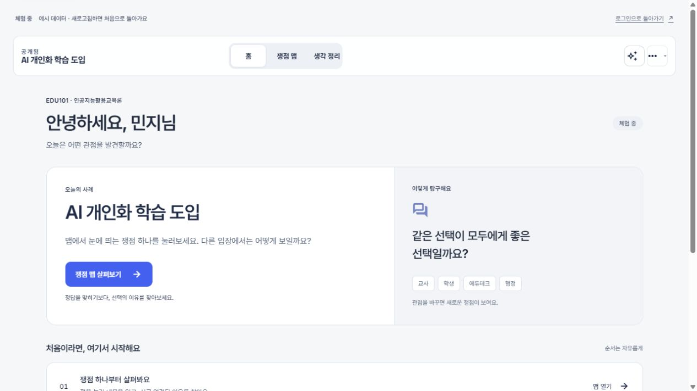
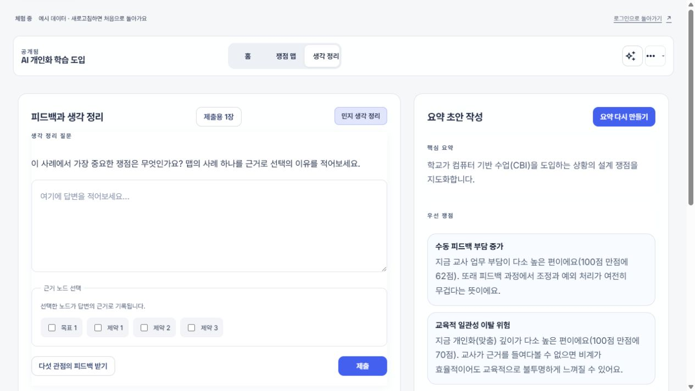

새 화면을 처음 사용하는 학생을 위한 짧은 실습입니다. 디자인 텐션 스튜디오는 같은 수업 사례를 서로 다른 입장에서 읽고, 선택의 이유를 근거와 함께 설명하는 공간입니다. 모든 기능을 익힐 필요는 없어요.
시작 전 · 체험과 실제 수업 구분하기
예시에서는 가상의 학생과 사례로 연습합니다. 새로고침하면 초기화되고, 체험 답변은 실제 수업에 제출되지 않습니다. 실제 수업은 교수자가 안내한 계정과 코스를 사용하세요. 처음 참여할 때만 로그인 카드의 처음 오셨나요? 코스 코드로 참여를 선택합니다. 이 공개 가이드에는 계정 비밀번호를 싣지 않습니다.
현재 버전 주의: 제출 문구만으로 교수자의 수신이 보장되지는 않습니다. 제출 전 원문을 따로 복사해 보관하고, 교수자가 안내한 수신 확인 또는 대체 제출 절차를 따르세요. 긴 답변은 현재 2,000자까지만 전송되는 문제가 있어 짧게 작성하고 원문을 보관하세요.
1 · 오늘의 사례 열기
홈에서 수업 이름과 오늘의 사례를 확인하고 쟁점 맵 살펴보기를 누르세요. 이미 탐색한 경우 버튼 문구가 달라질 수 있습니다. 홈 → 쟁점 맵 → 생각 정리가 기본 경로입니다.
할 일: 사례 제목을 읽고 “누구의 어떤 선택을 살펴보는가?”를 한 문장으로 말해보세요.
확인: 수업이나 사례가 다르면 추가 설정에서 선택을 확인하세요. 사례가 없으면 교수자에게 공개 여부를 문의합니다. 환영 슬라이드는 자동으로 뜨지 않습니다.

2 · 쟁점 하나를 읽기
쟁점 맵에서 노드 하나를 눌러 내용을 읽으세요. 번호만 보고 판단하지 마세요. 목표 1, 제약 1처럼 보이는 이름은 내용을 열어 확인해야 합니다.
예: “기기 접근 격차”를 발견했다면, “기기가 없는 학생도 같은 활동에 참여할 수 있을까?”라고 질문해 보세요. 이 문장은 연습용 예시이지 정답이 아닙니다.
확인: 내가 고른 쟁점이 왜 중요한지, 어떤 사례 내용에 근거하는지 설명할 수 있나요? 맵이 복잡하면 목록으로 보기 또는 패널을 접고 맵을 크게 보기를 사용하세요.
3 · 다른 입장으로 다시 보기
맵의 교사 · 학생 · 에듀테크 · 행정 버튼 중 다른 관점을 선택하세요. 같은 선택이라도 무엇이 달라지는지 읽습니다.
연습: 학생은 “기기를 쓸 수 있는가?”, 교사는 “수업 중 지원 부담은 얼마인가?”를 걱정할 수 있습니다. 두 입장에서 중요한 점을 하나씩 적으세요.
확인: 관점을 바꾸는 클릭 자체보다, 내 설명에서 달라진 이유가 중요합니다. 의견이 궁금하면 질문하기를 사용할 수 있지만 AI 답변을 사례의 사실이나 정답으로 간주하지 마세요.
4 · 내 쟁점과 근거 남기기
맵의 쟁점 추가에서 짧은 제목과 왜 중요한지를 적습니다. 수업 설정에 따라 추가 기능이나 공유 범위가 달라질 수 있어요. 동료에게 보일 수 있으므로 개인정보는 쓰지 마세요.
연습 제목: “기기 대여와 지원 시간”. 이유: “접근 기회뿐 아니라 교사의 지원 시간도 함께 확보해야 하기 때문이다.”
확인: 이후 생각 정리의 근거 노드를 고를 때, 번호만 기억하지 말고 실제 내용과 맞는지 확인하세요.
5 · 내 선택을 글로 설명하기
상단 생각 정리를 누르고 질문 아래에 답변을 적으세요. 관련 있는 근거 노드 선택 항목을 고릅니다.
쓰기 틀: “나는 ___을 우선하겠다. 사례의 ___이 그 근거다. 다만 ___ 입장에서는 ___이 어려울 수 있으므로 ___을 보완하겠다.”
원하면 다섯 관점의 피드백 받기를 사용해 빠진 근거나 반대 입장을 점검하세요. 피드백은 검토할 제안이지 자동 채점이 아닙니다. 체험 모드의 답변은 실제 서비스 AI 응답과 다를 수 있습니다.
확인: 내 선택, 사례 근거, 다른 입장의 우려가 모두 들어갔나요? 설계 참고 지표의 퍼센트는 학습 성적이나 글의 품질 점수가 아닙니다.

6 · 원문을 보관하고 제출 확인하기
- 답변 원문을 내 문서에 복사해 보관합니다. 새로고침이나 재로그인 후 초안 복원을 가정하지 마세요.
- 제출을 누릅니다. 빈 답변이면 먼저 작성하라는 안내가 나옵니다.
- 체험에서는 “실제 수업에는 제출되지 않아요” 안내를 확인합니다.
- 실제 수업에서는 교수자가 받은 내용까지 확인하세요. 제출용 1장은 인쇄·PDF 보관에 사용할 수 있으며 서버 수신 확인과는 별개입니다.
지금 할 일의 완료 체크만으로 제출 여부를 판단하지 마세요. 현재는 생각 정리 화면을 여는 것만으로도 체크가 붙을 수 있습니다. 연구 동의를 제출 문제의 해결책으로 강요하거나 임의로 바꾸지 마세요.
자주 묻는 질문
튜토리얼은 어디서 다시 보나요?
앱의 추가 설정 → 튜토리얼 보기에서 화면 안내를 다시 실행할 수 있습니다. 로그인 화면의 가이드 메뉴에서는 이 안내서를 엽니다.
생각 정리나 추가 버튼이 없어요.
교수자가 학생 화면을 제한했을 수 있습니다. 다른 코스를 만들거나 설정을 임의로 바꾸지 말고, 현재 사례와 수업의 허용 범위를 문의하세요.
로그인 정보가 기억나지 않아요.
받은 안내 메일을 확인하고 운영자에게 계정 복구를 요청하세요. 비밀번호를 질문창·공유 노드에 입력하지 마세요. 반복해서 추측하지 않아도 됩니다.
휴대전화에서 맵이 작아요.
목록 보기나 맵 확대 기능으로 쟁점부터 읽고, 상세 설명은 스크롤해서 확인하세요. 인터넷이 끊긴 상태의 저장·제출은 보장되지 않습니다.
AI가 틀린 말을 하거나 응답하지 않아요.
사례 내용과 비교해 근거를 확인하세요. AI 없이도 쟁점을 읽고 자신의 이유를 적을 수 있습니다. 응답 실패 시 글을 보관한 뒤 다시 시도하세요.
마무리 · 내가 할 수 있게 된 것
쟁점 하나를 설명하고, 두 입장의 차이를 말하고, 근거가 있는 내 선택을 글로 남겼다면 이 실습의 목적을 달성한 것입니다. 이는 학습 성취를 자동 판정하는 기준이 아니라 스스로 돌아보기 위한 질문입니다.